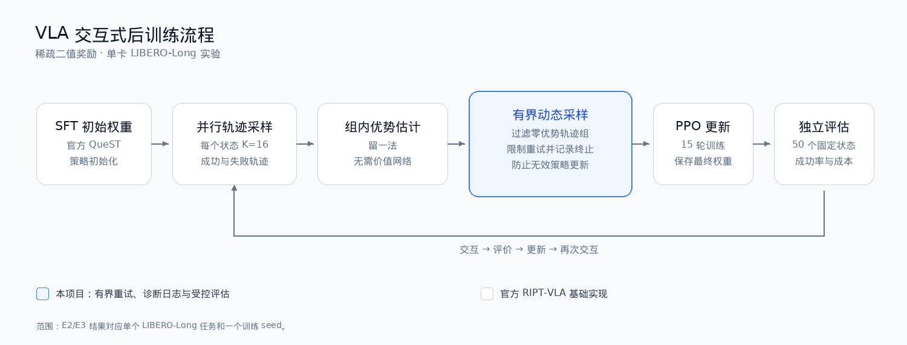

RIPT：用组内相对表现更新 VLA 策略
同一初始状态采样 K 条轨迹，使用留一法估计优势，不需要额外价值网络。全成功或全失败组的相对优势为零，因此需要在采样阶段识别并处理。

从后训练到自进化闭环
本项目在官方 RIPT-VLA 基础上增加单卡实验配置、有界动态采样、结果价值规划、经验回流和分层评估证据。

有界动态采样
设置最大采样次数，记录接受组、全成功/全失败丢弃组和终止原因；预算耗尽时不把无效样本用于 PPO。
结果价值评估器
联合上下文均值、当前观测和有序动作 token 表示，预测候选动作块的终端成功价值。QueST 主干冻结，只训练轻量 MLP。
候选动作规划
复用官方随机采样路径，在同一真实观测上生成 K 个不同动作块，按结果价值评分选择执行，再进行下一次重规划。
验证经验回流
只用仿真确认成功的规划轨迹微调策略先验；失败轨迹用于价值学习或失败分析，不进行无差别自我蒸馏。
为什么不直接复用“模型分数高”的结论
状态隔离
价值数据按初始状态 0–29 训练、30–39 验证、40–49 留出。规划结果同时给出全量与留出状态，防止把见过的状态当作泛化。
效果与成本
同时记录成功率、轨迹长度、采样丢弃、rollout 时间和候选推理耗时。并发条件下的耗时不包装成严格加速比。
结果价值并非精确 Q
模型由终端 0/1 结果训练，没有显式 Bellman 备份，也不对未选候选执行模型预测 rollout，因此称为结果价值或 Q 代理。
单卡运行与可复现实现
单卡与并行 rollout
使用 32GB GPU 完成训练。8 并行环境首轮采样较 4 并行减少 26.62%，但该数字只针对首轮，不代表总训练加速。
断点与配置验收
实现初始状态偏移续采、参数覆盖 dry-run 和 checkpoint 恢复；失败实验不覆盖原目录，也不将中间权重当作最终结果。
完整记录
保存配置、日志、模型哈希、逐 episode 结果和视频。CSV、实验文档和图表可直接在本网站检查。
适用边界
实验限于 LIBERO-Long、QueST 和单策略训练 seed，不扩展到 RoboTwin、真机或 7B OpenVLA-OFT。